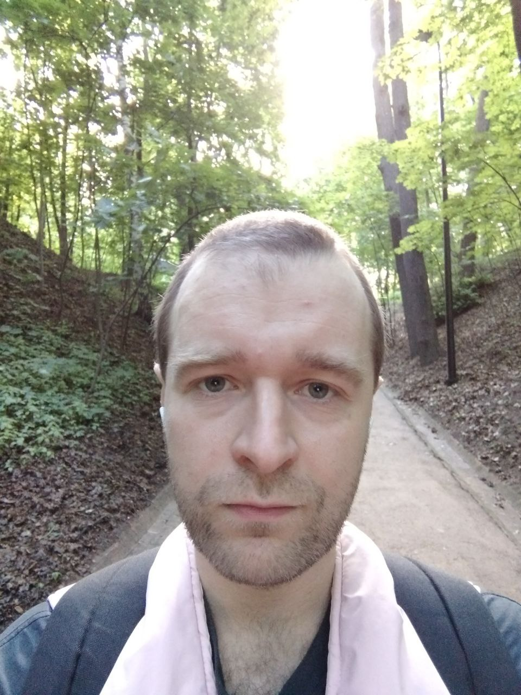

Профайл

Кратко о себе
Меня зовут Егор, я учусь в GB на программиста, также я выбрал вторую специализацию - аналитик. Я
профессионально играю в покер уже 12 лет, но решил сменить род занятий - произошло выгорание (уже
несколько
раз, но этот - последний). Программирование мне было интересно всегда, но я им не занимался с детства.
Надеюсь, что у меня все получится, хотя понимаю что путь будет непростой в текущей ситуации.
Мои хобби
- Велосипед
- Плавание
- Танцевальная электронная музыка
- Учу китайский
- Видеоигры